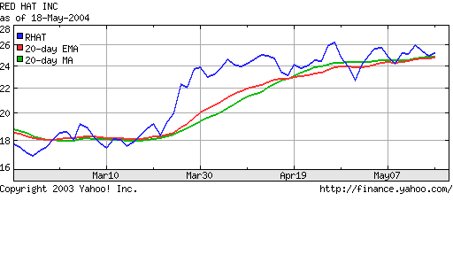
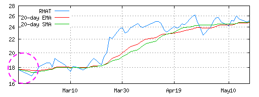
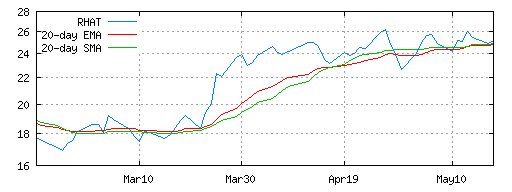

about Extreme Programming
with Perl
| Previous: Chapter 11: Test-Driven Design | Next: Chapter 13: Unit Testing | ||
Software evolves. All systems are adapted to the needs of their users and the circumstances in which they operate, even after years of planning.[2] Some people call this maintenance programming, implementing change requests, or, simply, firefighting. In XP, it's called continuous design, and it's the only way we design and build systems. Whatever you call it, change happens, and it involves two activities: changing what the code does and improving its internal structure. In XP, these two activities have names: implementing stories and refactoring. Refactoring is the process of making code better without changing its external behavior. The art of refactoring is a fundamental skill in programming. It's an important part of the programmer's craft to initiate refactorings to accommodate changes requested by the customer. In XP, we use tests to be sure the behavior hasn't changed. As any implementation grows, it needs to be refactored as changes (new features or defect fixes) are introduced. Sometimes we refactor before implementing a story, for example, to expose an existing algorithm as its own API. Other times, we refactor after adding a new feature, because we only see how to eliminate unnecessary duplication, after the feature is implemented. This to and fro of code expansion (implementing stories) and contraction (refactoring) is how the design evolves continuously. And, by the way, this is how Perl was designed: on demand and continuously. It's one of the reasons Perl continues to grow and thrive while other languages whither and die. This chapter evolves the design we started in Test-Driven Design. We introduce refactoring by simplifying the EMA equation. We add a new class (simple moving average) to satisfy a new story, and then we refactor the two classes to share a common base class. Finally, we fix a defect by exposing an API in both classes, and then we refactor the APIs into a single API in the base class. RefactoringThe first step in continous design is to be sure you have a test. You need a test to add a story, and you use existing tests to be sure you don't break anything with a refactoring. This chapter picks up where Test-Driven Design left off. We have a working exponentional moving average (EMA) module with a working unit test. The first improvement is a simple refactoring. The equation in compute is more complex than it needs to be: The refactored equation yields the same results and is simpler: After the refactoring, we run our test, and it passes. That's all there is to refactoring. Change the code, run the test for the module(s) we are modifying, run the entire unit test suite, and then check in once all tests pass. Well, it's not always that easy, sometimes we make mistakes. That's what the tests are for, and tests are what simplifies refactoring. Simple Moving AverageOur hypothetical customer would like to expand her website to compete with Yahoo! Finance. The following graph shows that Yahoo! offers two moving averages: 
In order to provide the equivalent functionality, we need to implement a simple moving average (SMA or MA in Yahoo!'s graph). An SMA is the arithmetic mean of the last N periods of the price series. For a daily graph, we add in the new day's price and we remove the oldest price from the sum before we take the average. SMA Unit TestThe following test demonstrates the algorithm. The test was created by starting with a copy of the EMA test from the Test-Driven Design chapter. We replaced EMA with SMA, and changed the values to match the SMA algorithm: Like the EMA, the SMA stays constant (5) when the input values remain constant (5). The deviance cases are identical, which gives us another clue that the two algorithms have a lot in common. The difference is that average value changes differently, and we need to test the boundary condition when values "fall off the end" of the average. SMA ImplementationThe EMA and the SMA unit test are almost identical. It follows that the implementations should be nearly identical. Some people might want to create a base class so that SMA and EMA could share the common code. However, at this stage, we don't know what that code might be. That's why we do the simplest thing that could possibly work, and copy the EMA class to the SMA class. And, let's run the test to see what happens after we change the package name from EMA to SMA: 1..11 ok 1 - use SMA; ok 2 ok 3 ok 4 not ok 5 # Failed test (SMA.t at line 10) # got: '7.4' # expected: '7' not ok 6 # Failed test (SMA.t at line 11) # got: '8.84' # expected: '8' not ok 7 # Failed test (SMA.t at line 12) # got: '10.504' # expected: '10' ok 8 ok 9 ok 10 ok 11 # Looks like you failed 3 tests of 11. The test fails, because an EMA algorithm in an SMA's clothing is still an EMA. That's good. Otherwise, this section would be way too short. Without further ado, here's the correct algorithm: The sum calculation is different, but the basic structure is the same. The new method checks to makes sure that length is reasonable. We need to maintain a queue of all values in the sum, because an SMA is a FIFO algorithm. When a value is more than length periods old, it has absolutely no affect on the average. As an aside, the SMA algorithm pays a price for that exactness, because it must retain length values where EMA requires only one. That's the main reason why EMAs are more popular than SMAs in financial engineering applications. For our application, what we care about is that this implementation of SMA satisfies the unit test. We also note that EMA and SMA have a lot in common. However, after satisfying the SMA test, we run all the unit tests to be sure we didn't inadvertently modify another file, and then we checkin to be sure we have a working baseline. Frequent checkins is important when designing continuously. Programmers have to be free to make changes knowing that the source repository always holds a recent, correct implementation. Move Common Features to a Base ClassThe SMA implementation is functionally correct, but it isn't a good design. The quick copy-and-paste job was necessary to start the implementation, and now we need to go back and improve the design through a little refactoring. The classes SMA and EMA can and should share code. We want to represent each concept once and only once so we only have to fix defects in the implementation of the concepts once and only once. The repetitive code is contained almost entirely in the new methods of SMA and EMA. The obvious solution is to create a base class from which SMA and EMA are derived. This is a very common refactoring, and it's one you'll use over and over again. Since this is a refactoring, we don't write a new test. The refactoring must not change the observable behavior. The existing unit tests validate that the behavior hasn't changed. That's what differentiates a refactoring from simply changing the code. Refactoring is the discipline of making changes to improve the design of existing code without changing the external behavior of that code. The simple change we are making now is moving the common parts of new into a base class called MABase: The corresponding change to SMA is: For brevity, I left out the the EMA changes, which are similar to these. Note that MABase doesn't share fields between its two subclasses. The only common code is checking the length and blessing the instance is shared. Refactor the Unit TestsAfter we move the common code into the base clase, we run all the existing tests to be sure we didn't break anything. However, we aren't done. We have a new class, which deserves its own unit test. EMA.t and SMA.t have four cases in common. That's unnecessary duplication, and here's MABase.t with the cases factored out: After running the new test, we refactor EMA.t (and similarly SMA.t) as follows: By removing the redundancy, we make the classes and their tests cohesive. MABase and its test is concerned with validating $length. EMA and SMA are responsible for computing moving averages. This conceptual clarity, also known as cohesion, is what we strive for. Fixing a DefectThe design is better, but it's wrong. The customer noticed the difference between the Yahoo! graph and the one produced by the algorithms above: 
The lines on this graph start from the same point. On the Yahoo!
graph in the Yahoo! 20 day moving averages on 3 month graph from May 18, 2004 The solution to the problem is to "build up" the moving average data before the initial display point. The build up period varies with the type of moving average. For an SMA, the build up length is the same as the length of the average minus one, that is, the average is correctly weighted on the "length" price. For an EMA, the build up length is usually twice the length, because the influence of a price doesn't simply disappear from the average after length days. Rather the price's influence decays over time. The general concept is essentially the same for both averages. The algorithms themselves aren't different. The build up period simply means that we don't want to display the prices. separate out compute and value. Compute returns undef. value blows up. is_ok or will_compute_ok? The two calls are inefficent, but the design is simpler. Show the gnuplot code to generate the graph. gnuplot reads from stdin?The only difference is that the two algorithms have different build up lengths. The easiest solution is therefore to add a field in the sub-classes which the base classes exposes via a method called build_up_length. We need to expand our tests first: The correct answer for EMA is always two times length. It's simple enough that we only need one case to test it. The change to SMA.t is similar. To satisfy these tests, we add build_up_length to MABase: The computation of the value of build_up_length requires a change to new in EMA: The change to SMA is similar, and left out for brevity. After we fix the plotting code to reference build_up_length, we end up with the following graph: 
Global RefactoringAfter releasing the build up fix, our customer is happy again. We also have some breathing room to fix up the design again. When we added build_up_length, we exposed a configuration value via the moving average object. The plotting module also needs the value of length to print the labels ("20-day EMA" and "20-day SMA") on the graph. This configuration value is passed to the moving average object, but isn't exposed via the MABase API. That's bad, because length and build_up_length are related configuration values. The plotting module needs both values. To test this feature, we add a test to SMA.t (and similarly, to EMA.t): We run the test to see that indeed length does not exist in MABase or its subclasses. Then we add length to MABase: SMA already has a field called length so we only need to change EMA to store the length: This modification is a refactoring even though external behavior (the API) is different. When an API and all its clients (importers) change, it's called a global refactoring. In this case, the global refactoring is backwards compatible, because we are adding new behavior. The clients were using a copy of length implicitly. Adding an explicit length method to the API change won't break that behavior. However, this type of global refactoring can cause problems down the road, because old implicit uses of length still will work until the behavior of the length method changes. At which point, we've got to know that the implicit coupling is no longer valid. That's why tests are so important with continuous design. Global refactorings are easy when each module has its own unit test and the application has an acceptance test suite. The tests will more than likely catch the case where implicit couplings go wrong either at the time of the refactoring or some time later. Without tests, global refactorings are scary, and most programmers don't attempt them. When an implicit coupling like this becomes cast in stone, the code base is a bit more fragile, and continous design is a bit harder. Without some type of remediation, the policy is "don't change anything", and we head down the slippery slope that some people call Software Entropy.[4]
Simplify AccessorsSoftware entropy creeps in when the software fails to adapt to a change. For example, we now have two accessors that are almost identical: The code is repeated. That's not a big problem in the specific, because we've only done it twice. This subtle creep gets to be a bigger problem when someone else copies what we've done here. Simple copy-and-paste is probably the single biggest cause of software rot in any system. New programmers on the project think that's how "we do things here", and we've got a standard practice for copying a single error all over the code. It's not that this particular code is wrong; it's that the practice is wrong. This is why it's important to stamp out the practice when you can, and in this case it's very easy to do. We can replace both accessors with a single new API called get. This global refactoring is very easy, because we are removing an existing API. That's another reason to make couplings explicit: when the API changes, all uses fail with method not found. The two unit test cases for EMA now become: And, we replace length and build_up_length with a single method: We also refactor uses of build_up_length and length in the plotting module. This is the nature of continuous rennovation: constant change everywhere. And, that's the part that puts people off. They might ask why the last two changes (adding length and refactoring get) were necessary. Change HappensWhether you like it or not, change happens. You can't stop it. If you ignore it, your software becomes brittle, and you have more (boring and high stress) work to do playing catch up with the change. The proactive practices of testing and refactoring seem unnecessary until you do hit that defect that's been copied all over the code, and you are forced to fix it. Not only is it difficult to find all copies of an error, but you also have to find all places in the code which unexpectedly depended on the behavior caused by the defect. Errors multiply so that's changing a single error into N-squared errors It gets even worse when the practice of copy-and-pasting is copied. That's N-cubed, and that will make a mess of even the best starting code base. Refactoring when you see replication is the only way to eliminate this geometric effect. Without tests, refactoring is no longer engineering, it's hacking. Even the best hackers hit a wall if they can't validate a change hasn't broken something. They'll create ad hoc tests if necessary. XP formalizes this process. However, unit testing is still an art. The only way to get good at it is by seeing more examples. The next chapter takes a deeper look at the unit testing in a more realistic environment. Footnotes
|
|||
| Previous: Chapter 11: Test-Driven Design | Next: Chapter 13: Unit Testing | ||
Copyright © 2004 Robert Nagler (nagler at extremeperl.org)
Licensed under a Creative Commons Attribution 4.0 International License.